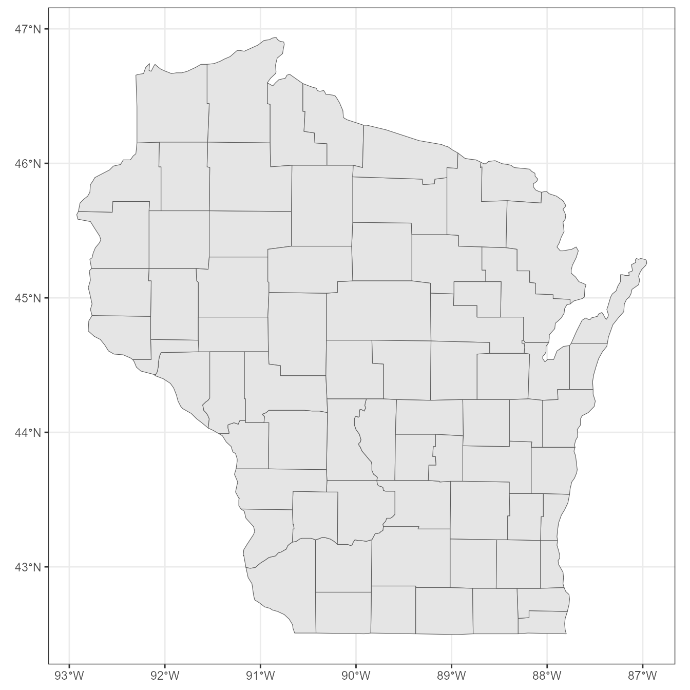

Introduction to arcpullr
29 August, 2022
intro_to_arcpullr.RmdTo see more complete package documentation check out: https://pfrater.github.io/arcpullr/
URL’s for examples
Example Source Data
wdnr_base_url <- "https://dnrmaps.wi.gov/arcgis/rest/services"
streams_layer_url <- "WT_SWDV/WT_Inland_Water_Resources_WTM_Ext_v2/MapServer/2"
streams_url <- paste(wdnr_base_url, streams_layer_url, sep = "/")
# the mke_county polygon is available as an exported object in arcpullr
open_water_layer_url <- "WT_SWDV/WT_Inland_Water_Resources_WTM_Ext_v2/MapServer/3"
hydro_url <- paste(wdnr_base_url, open_water_layer_url, sep = "/")
wis_county_layer_url <- "https://datcpgis.wi.gov/arcgis/rest/services/Base/PolygonsExternal/MapServer/0"Feature (i.e. vector) Layers
The get_spatial_layer() function
This is one of the core functions of the package, and allows users to pull Feature Service data from an ArcGIS REST API.
# url <- some url from an ArcGIS REST API layer
layer <- get_spatial_layer(url)The URL should be a specific layer from an ArcGIS REST API, such as the Wisconsin Dep’t. of Natural Resources Musky Streams layer, for example.
The get_spatial_layer() function will retrieve data from
this layer, and format it to an object of class (i.e. of the R
package sf: Simple Features
for R).
This function is also query-able both using both SQL code and ArcGIS’s Query (Feature Service) functionality.
Querying Spatially via ArcGIS Feature Service
Along with SQL, layers from an ArcGIS REST API may be queried
spatially. This is accomplished with the get_layer_by_*
family of functions. These functions are essentially a wrapper around
get_spatial_layer that removes the abstraction of the
spatial query syntax used by ArcGIS. These functions require a spatial
object of class sf to be passed to the
geometry argument. To test this out you can also quickly
create simple sf objects using sf_lines(),
sf_points(), or sf_polygons() to test out the
service feature.
mke_waters <- get_layer_by_poly(url = streams_url, mke_county)Spatial queries can be done with polygons, lines, or points…just use
the respective get_layer_by_* function. See the vignette on spatial querying for more
detailed examples.
Querying via SQL
To query via SQL within the function the field name for the query of interest must be known. For example,
wi_river <- get_spatial_layer(hydro_url, where = "WATERBODY_ROW_NAME = 'Wisconsin River'")For multiple WHERE clauses see the ?sql_where function,
which automates the creation of a WHERE clause.
Raster Layers
arcpullr is capable of pulling raster layers as well (denoted as map
and image layers by ArcGIS REST APIs). Utilize the
get_map_layer and get_image_layer functions to
pull these respective layers. See more information in the vignette on raster layers
Plotting Layers
Layers retrieved via any of the get_*_layer functions
may be plotted using an appropriate method which corresponds to the
object type. For quick plotting we’ve also included the
plot_layer function. This function will plot layers using
ggplot2 by default or can be switched to base graphics
using the plot_pkg argument.
